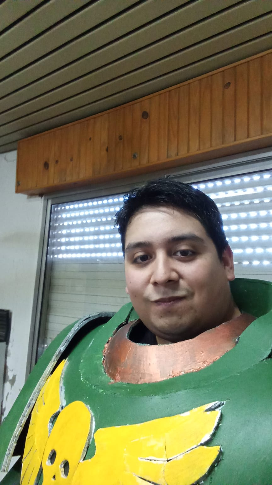
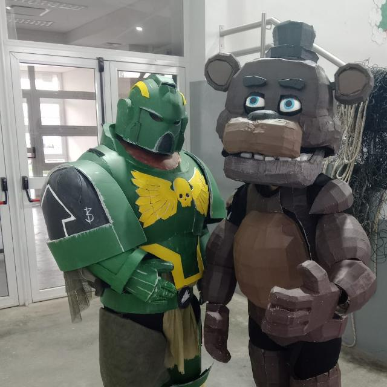

En relación a la carrera
Mi nombre es Matías Robles, estoy estudiando la carrera de Desarrollo de Aplicaciones Web para adquirir conocimientos acerca de programación en general, base de datos y creación de páginas web para poder crear un sitio web donde almacenar historias, al mejor estilo wiki y desarrollo de software que me permitan adentrarme posteriormente en la creación de videojuegos y aplicaciones que sean de utilidad. Trabajo con datos y me gustaría en algún momento de la vida hacer un software de control de inventario que cubra todo lo que necesito o incorpore cosas que creo que necesito. Básicamente, busco divertirme aprendiendo y hacer arte mediante todo esto que pueda aprender e incorporar.
- Python - Aprendiendo, esta interesante.
- C# - Aprender, porque aprender de todo es divertido.
- C++ - Me gustaría aprender a utilizarlo, también en Netacad hay un curso en profundidad y esta chido.
- Java - Para hacer mods
- PHP - Hace mucho tiempo vi sobre estructuras de control e introducción, aunque no recuerdo mucho.
Más sobre mí.
Me gusta aprender cosas variadas, trabajar con datos, jugar videojuegos y, recientemente, hacer cosplay o pintar, de vez en cuando pinto figuras de filamento impresas en 3D.

